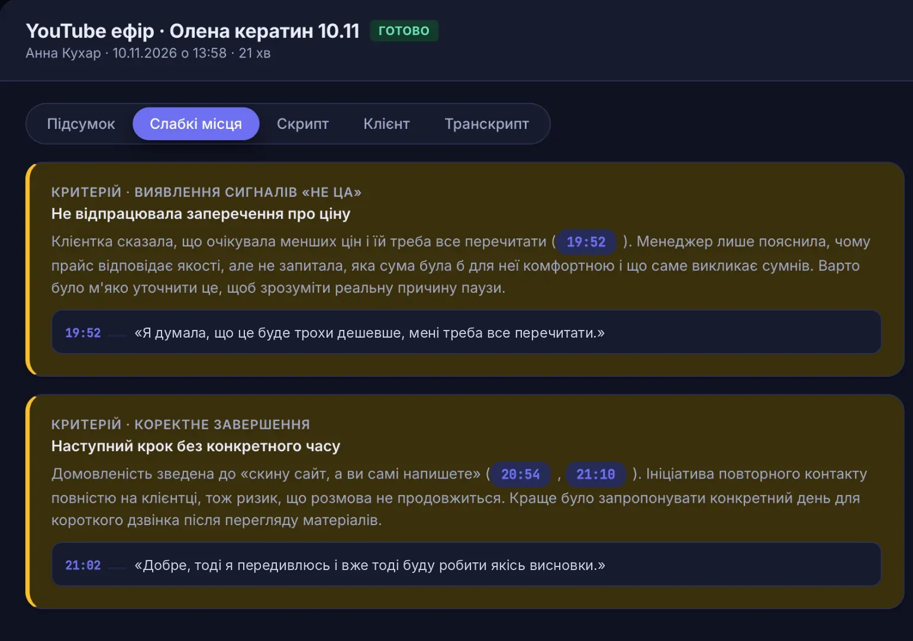
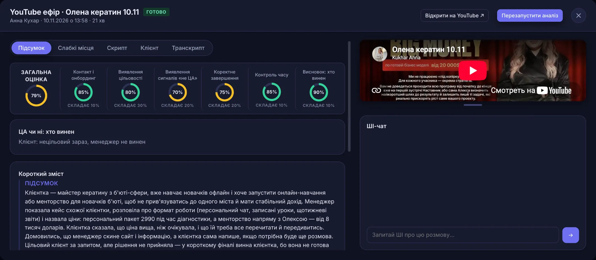
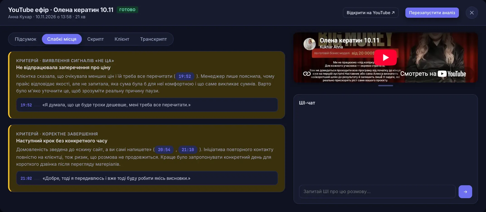
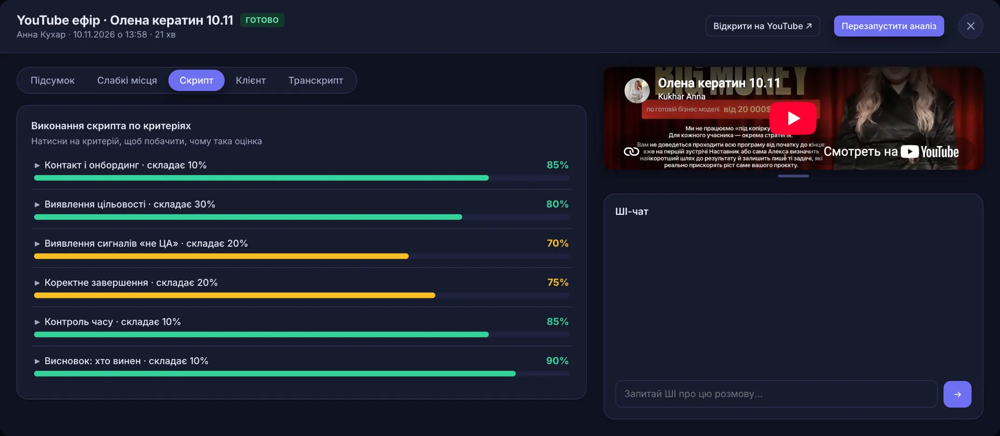
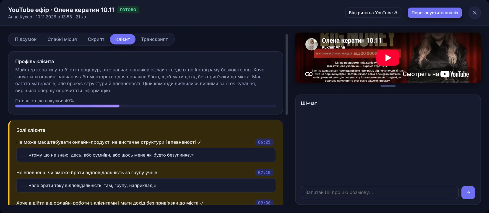
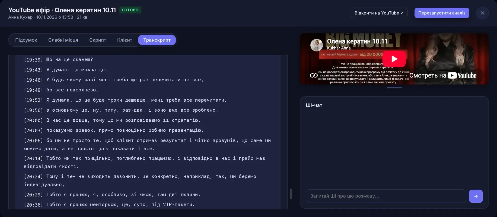
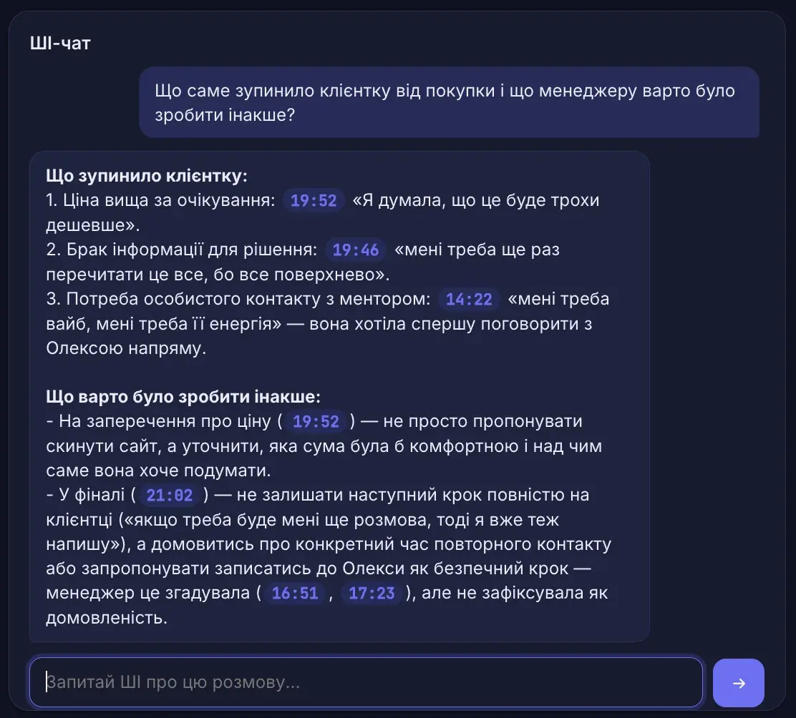
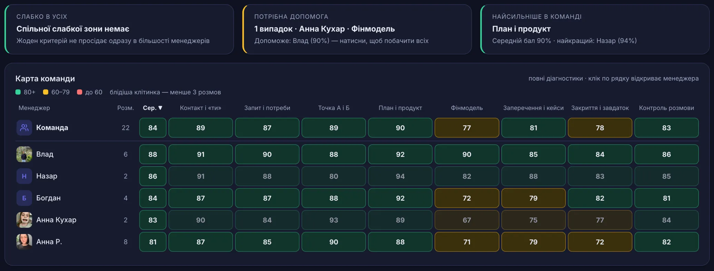

Кожна розмова менеджера — під лупоюКаждый разговор менеджера — под лупой
ШІ розбирає записи дзвінків і Zoom-зустрічей за вашим скриптом і показує, де менеджер втратив клієнта: помилка, дослівна цитата, таймкод.ИИ разбирает записи звонков и Zoom-встреч по вашему скрипту и показывает, где менеджер потерял клиента: ошибка, дословная цитата, таймкод.
Тест: надсилаєте 3 записи, за 48 годин отримуєте розбір. Записи використовую тільки для тесту й видаляю після нього.Тест: присылаете 3 записи, через 48 часов получаете разбор. Записи использую только для теста и удаляю после него.

Реальна картка розмови із системи.Реальная карточка разговора из системы. Наведіть курсор — лупа ваша.Наведите курсор — лупа ваша. 19:52Клієнтка чекала меншої ціни — заперечення залишилось без уточнення.Клиентка ждала цену ниже — возражение осталось без уточнения. 21:02Домовленість — «скину сайт, а ви самі напишете». Наступний крок без дати.Договорённость — «скину сайт, а вы сами напишете». Следующий шаг без даты.
Керівник чує кілька розмов. Клієнти губляться в решті.Руководитель слышит несколько разговоров. Клиенты теряются в остальных.
Слухаєте вибірково — скільки встигнетеСлушаете выборочно — сколько успеете
«Клієнт не готовий» — зі слів менеджера«Клиент не готов» — со слов менеджера
Зауваження загальні: «краще відпрацьовуй заперечення»Замечания общие: «лучше отрабатывай возражения»
Навчання «про все потроху»Обучение «обо всём понемногу»
Одна розмова — п'ять відповідейОдин разговор — пять ответов
Це реальна картка із системи. Ліворуч — розбір, праворуч — запис розмови й ШІ-чат, якому можна поставити будь-яке питання про неї.Это реальная карточка из системы. Слева — разбор, справа — запись разговора и ИИ-чат, которому можно задать любой вопрос о нём.
Як пройшла розмова і хто винен, що клієнт не купив?Как прошёл разговор и кто виноват, что клиент не купил?
Загальна оцінка, шість критеріїв з вагами і короткий зміст. Окремий висновок: провал менеджера чи нецільовий клієнт. Тут — 79%, клієнтка зараз нецільова, менеджер не винен.Общая оценка, шесть критериев с весами и краткое содержание. Отдельный вывод: провал менеджера или нецелевой клиент. Здесь — 79%, клиентка сейчас нецелевая, менеджер не виноват.
Де саме менеджер недотиснув?Где именно менеджер недожал?
Кожна помилка з поясненням, порадою і дослівною цитатою. Тут дві: заперечення про ціну залишилось без уточнення (19:52) і наступний крок без конкретного часу (21:02).Каждая ошибка с пояснением, советом и дословной цитатой. Здесь две: возражение о цене осталось без уточнения (19:52) и следующий шаг без конкретного времени (21:02).
Що зі скрипта виконано, а що пропущено?Что из скрипта выполнено, а что пропущено?
Оцінка за кожним критерієм вашого скрипта з його вагою. Клік по критерію показує, чому оцінка саме така.Оценка по каждому критерию вашего скрипта с его весом. Клик по критерию показывает, почему оценка именно такая.
Що болить клієнту і чи готовий він купити?Что болит у клиента и готов ли он купить?
Профіль клієнта, готовність до покупки і болі — кожна з цитатою й таймкодом. Готова основа для наступного дзвінка.Профиль клиента, готовность к покупке и боли — каждая с цитатой и таймкодом. Готовая основа для следующего звонка.
Що було сказано дослівно?Что было сказано дословно?
Повна розшифровка з таймкодами. На скріні той самий момент із ціною — 19:52. Текст можна скопіювати або завантажити.Полная расшифровка с таймкодами. На скрине тот самый момент с ценой — 19:52. Текст можно скопировать или скачать.





Гортайте картку вбік — праворуч запис і ШІ-чат.Листайте карточку вбок — справа запись и ИИ-чат.
Хочете побачити так свої розмови?Хотите увидеть так свои разговоры?
Розібрати 3 мої розмови безкоштовноРазобрать 3 моих разговора бесплатноЄ точкове питання? Запитайте ШІЕсть точечный вопрос? Спросите ИИ
Окрім готового розбору, у кожній розмові є ШІ-чат. Напишіть своє питання, і за секунди отримаєте відповідь за повною розшифровкою, з цитатами й таймкодами, щоб усе можна було перевірити.Кроме готового разбора, в каждом разговоре есть ИИ-чат. Напишите свой вопрос, и за секунды получите ответ по полной расшифровке, с цитатами и таймкодами, чтобы всё можно было проверить.
- Що саме зупинило клієнта від покупки?Что именно остановило клиента от покупки?
- Яке заперечення менеджер пропустив?Какое возражение менеджер пропустил?
- Що сказати клієнту під час повторного контакту?Что сказать клиенту при повторном контакте?

Приклад із системи: питання й відповідь ШІ по одній із розмов.Пример из системы: вопрос и ответ ИИ по одному из разговоров.
Уся команда на одному екраніВся команда на одном экране
Рядок — менеджер, колонка — критерій скрипта. Зверху система сама підказує, що просідає в усіх і кому потрібна допомога.Строка — менеджер, колонка — критерий скрипта. Сверху система сама подсказывает, что проседает у всех и кому нужна помощь.

Гортайте таблицю вбік.Листайте таблицу вбок.
Жовта колонка в усіхЖёлтая колонка у всех
Проблема не в людях, а в скрипті чи навчанні.Проблема не в людях, а в скрипте или обучении.
Жовтий рядок в одногоЖёлтая строка у одного
Привід для розмови з конкретним менеджером.Повод для разговора с конкретным менеджером.
Тиждень, місяць, рікНеделя, месяц, год
Видно, чи дає результат навчання: оцінки ростуть чи стоять.Видно, даёт ли результат обучение: оценки растут или стоят.
Скільки коштує один втрачений продажСколько стоит одна потерянная продажа
Підставте свої цифри. Це не обіцянка результату, а ціна питання: скільки приносить один додатковий продаж на менеджера.Подставьте свои цифры. Это не обещание результата, а цена вопроса: сколько приносит одна дополнительная продажа на менеджера.
на місяцьв месяц
Почніть з безкоштовного тестуНачните с бесплатного теста
Спочатку ви бачите розбір власних розмов, потім вирішуєте. На тест беру до 3 команд на тиждень: кожен розбір перевіряю сам.Сначала вы видите разбор своих разговоров, потом решаете. На тест беру до 3 команд в неделю: каждый разбор проверяю сам.
Надсилаєте 3 записиПрисылаете 3 записи
Дзвінки або Zoom-зустрічі ваших менеджерів. Якщо є скрипт — додайте і його.Звонки или Zoom-встречи ваших менеджеров. Если есть скрипт — добавьте и его.
За 48 годин — розбірЧерез 48 часов — разбор
Три розмови і три конкретні помилки з цитатами й таймкодами. 48 годин — це термін тесту, а не кожного розбору.Три разговора и три конкретные ошибки с цитатами и таймкодами. 48 часов — это срок теста, а не каждого разбора.
Короткий дзвінокКороткий звонок
Показую результат, обговорюємо ваш скрипт і критерії, називаю вартість.Показываю результат, обсуждаем ваш скрипт и критерии, называю стоимость.
ПідключенняПодключение
Налаштовую систему під вашу команду. Далі нові розмови розбираються автоматично.Настраиваю систему под вашу команду. Дальше новые разговоры разбираются автоматически.
- Записи тільки для розбору — видаляю після тестуЗаписи только для разбора — удаляю после теста
- NDA — за запитом, до першого файлуNDA — по запросу, до первого файла
- Тест нічого не коштує і ні до чого не зобов'язуєТест ничего не стоит и ни к чему не обязывает
ПідійдеПодойдёт
Якщо у вас від 3 менеджерів, продажі йдуть через дзвінки або Zoom і розмови записуються: онлайн-школи, інфобізнес, агенції, B2B.Если у вас от 3 менеджеров, продажи идут через звонки или Zoom и разговоры записываются: онлайн-школы, инфобизнес, агентства, B2B.
Не підійдеНе подойдёт
Якщо менеджер один або розмов кілька на тиждень — їх простіше послухати самому.Если менеджер один или разговоров несколько в неделю — их проще послушать самому.

Хто це робитьКто это делает
Я Влад, розробник цієї системи. Сам працюю в продажах, тому робив її під реальні задачі керівника, а не «для галочки». Пишете в Telegram — відповідаю особисто.Я Влад, разработчик этой системы. Сам работаю в продажах, поэтому делал её под реальные задачи руководителя, а не «для галочки». Пишете в Telegram — отвечаю лично.
Написати ВладуНаписать Владу- 5менеджерів у відділі продажів, який уже працює із системоюменеджеров в отделе продаж, который уже работает с системой
- 1000+розмов уже розібрано системоюразговоров уже разобрано системой
- 7скриптів налаштовано під різні продукти й типи розмовскриптов настроено под разные продукты и типы разговоров
ПитанняВопросы
Скільки це коштує?Сколько это стоит?
Залежить від кількості менеджерів і розмов. Називаю вартість на дзвінку після тесту, коли ви вже бачили результат на своїх розмовах.Зависит от количества менеджеров и разговоров. Называю стоимость на звонке после теста, когда вы уже видели результат на своих разговорах.
ШІ може помилитись?ИИ может ошибиться?
Може, як і людина. Тому кожен висновок підкріплений цитатою й таймкодом: перевірити його — хвилина. У розшифровці теж трапляються неточні слова, особливо на записі поганої якості.Может, как и человек. Поэтому каждый вывод подкреплён цитатой и таймкодом: проверить его — минута. В расшифровке тоже встречаются неточные слова, особенно на записи плохого качества.
Менеджерам треба щось міняти в роботі?Менеджерам нужно что-то менять в работе?
Ні. Вони працюють як раніше. Потрібно лише, щоб розмови записувались.Нет. Они работают как раньше. Нужно только, чтобы разговоры записывались.
Хто бачить наші розмови?Кто видит наши разговоры?
У системі доступ за ролями: менеджер бачить тільки свої розмови, керівник — усю команду. Записи з тесту видаляю після розбору. Де і скільки зберігаються записи після підключення, узгоджуємо до першого файлу.В системе доступ по ролям: менеджер видит только свои разговоры, руководитель — всю команду. Записи с теста удаляю после разбора. Где и сколько хранятся записи после подключения, согласуем до первого файла.
Надішліть 3 записи. За 48 годин покажу, де губляться клієнти.Пришлите 3 записи. Через 48 часов покажу, где теряются клиенты.
Тест безкоштовний. Якщо помилок не знайду — так і скажу.Тест бесплатный. Если ошибок не найду — так и скажу.
Написати в TelegramНаписать в Telegram